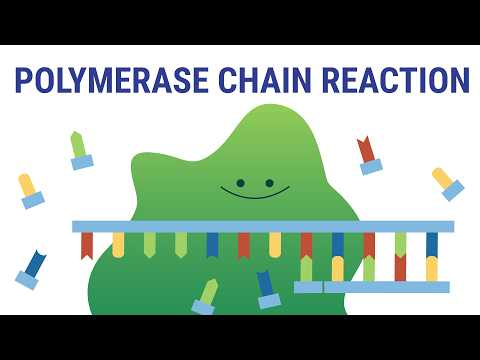
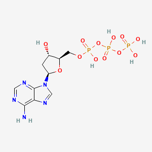
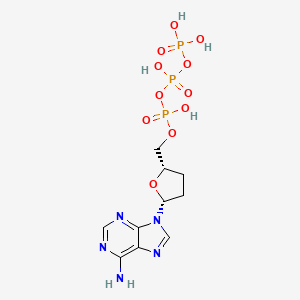
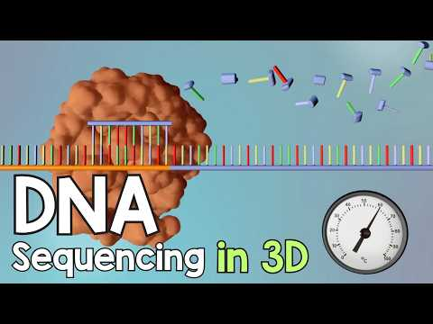
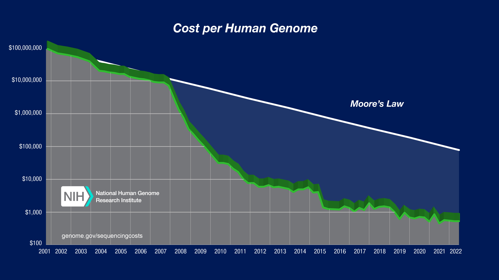

PCR Sanger and Genome Sequencing
PCR과 Sanger 시퀀싱 및 게놈 프로젝트
주형 의존 합성과 PCR / Sanger 사슬 종결과 판독 / 게놈 프로젝트와 비용
송영준 Youngjun Song / 인천대학교 / 75분
염기서열 분석의 측정 대상
- Sequencing: 염기의 순서를 결정하는 측정
- 알려진 프라이머에서 시작하는 판독
- 상보 합성과 직접 신호 검출의 구분
https://www.genome.gov/about-genomics/fact-sheets/Polymerase-Chain-Reaction-Fact-Sheet
주형과 새 가닥의 방향
- 주형은 새 가닥과 역평행
- 중합효소는 프라이머 3′-OH에서 신장
- 새 가닥의 합성 방향: 5′→3′
- 새 가닥 판독 후 주형은 역상보로 변환
https://www.genome.gov/about-genomics/fact-sheets/Polymerase-Chain-Reaction-Fact-Sheet
PCR의 반응 구성과 선택

- 두 프라이머가 정하는 증폭 구간
- 주형, DNA polymerase, dNTP
- 변성·어닐링·신장의 반복
- 여러 사이클에 걸친 표적 사본 축적
https://www.genome.gov/about-genomics/fact-sheets/Polymerase-Chain-Reaction-Fact-Sheet
PCR 주기의 단계
- Denaturation: 두 가닥 분리
- Annealing: 상보 프라이머 결합
- Extension: 프라이머 3′ 말단의 신장
- 다음 주기에서 새 산물도 주형으로 사용
- 가닥 분리
- 두 프라이머의 결합
- 상보 가닥 신장
- 산물의 다음 주형 참여
https://www.genome.gov/about-genomics/fact-sheets/Polymerase-Chain-Reaction-Fact-Sheet
PCR과 cycle sequencing
- PCR: 두 프라이머, 표적의 지수적 증폭
- Cycle sequencing: 한 프라이머, 종결 산물의 생성
- 공통점: 가열 주기와 DNA polymerase
- 차이: 산물 종류와 정보를 얻는 목적
https://www.genome.gov/about-genomics/fact-sheets/Polymerase-Chain-Reaction-Fact-Sheet
PCR 원리 영상

yourgenome YouTube에서 보기
영상의 관찰 항목
- 가열 후 가닥 분리의 위치
- 프라이머 3′ 말단과 신장 방향
- 산물이 다음 사이클 주형이 되는 시점
dNTP와 ddNTP의 구조


- dNTP: 3′-OH를 가진 신장 기질
- ddNTP: 3′-OH 대신 H
- ddNTP 도입 후 다음 결합 형성 불가
- 3′ 위치와 5′ 인산의 구분
Sanger chain termination
- 재료: 단일가닥 주형 · 프라이머 · DNA 중합효소 · dNTP 4종 · 소량의 ddNTP
- ddNTP = 3′ 탄소에 −OH 대신 −H → 다음 뉴클레오타이드와 인산다이에스터 결합 불가 → 사슬 종결
- 결과: 해당 염기 자리마다 끝나는 중첩된 조각 집합(nested set) → 전기영동으로 길이순 정렬
- 새 가닥 5′-A T G C G … ddGTP 반응관 → 끝이 G인 조각 = ATG · ATGCG (길이 3, 5)
- ddATP 관 → 길이 1 · ddTTP 관 → 길이 2 · ddCTP 관 → 길이 4
- 네 관을 짧은 순서로 합치면 1 A · 2 T · 3 G · 4 C · 5 G → ATGCG
Sanger 반응의 순서
- 주형과 프라이머의 결합
- dNTP와 ddNTP를 포함한 연장 반응
- 각 위치에서 확률적으로 사슬 종결
- 종결 조각의 분리와 끝 염기 판독
- 같은 시작점의 주형 준비
- dNTP와 ddNTP의 경쟁 도입
- 다양한 길이의 종결 조각 생성
- 길이순 분리와 염기 판독
https://www.genome.gov/about-genomics/fact-sheets/Polymerase-Chain-Reaction-Fact-Sheet
종결 조각의 길이와 염기
| 조각 길이 | 종결 조각 | 끝 염기 |
|---|---|---|
| 1 | A | A |
| 2 | AT | T |
| 3 | ATG | G |
| 4 | ATGC | C |
| 5 | ATGCG | G |
- 새 가닥 예: 5′-ATGCG-3′
- A에서 종결: A
- G에서 종결: ATG, ATGCG
- 길이 1·2·3·4·5의 끝 염기: A·T·G·C·G
확인·실습 문제
주형 가닥의 서열을 5′→3′ 방향으로 작성
https://www.genome.gov/about-genomics/fact-sheets/Polymerase-Chain-Reaction-Fact-Sheet
ddNTP 비율과 종결 위치
n번째 X 자리에서 종결할 확률 P(n) = (1 − p)ⁿ⁻¹ · p
평균 종결 위치 = 1/p번째 X · p ≈ k·[ddXTP]/[dXTP] (k = 중합효소가 ddNTP를 받아들이는 상대 효율)
| p | 평균 위치 | 125번째 신호 | 250번째 신호 |
|---|---|---|---|
| 0.004 | 250 | 0.61 | 0.37 |
| 0.008 | 125 | 0.37 | 0.14 |
| 0.016 | 62.5 | 0.14 | 0.02 |
p = 0.008, n = 125 → 0.992¹²⁴ ≈ e−0.99 ≈ 0.37
→ ddNTP가 많으면 짧은 조각만, 적으면 신호가 약함 → 읽을 길이에 맞춰 비율 조절
교육용 종결 확률 모형 / https://doi.org/10.1073/pnas.74.12.5463
형광 표지와 모세관 전기영동
- 네 염기를 구분하는 형광 표지
- 종결 조각을 모세관 안에서 길이순 분리
- 레이저 여기와 형광 검출
- 피크 순서를 A·C·G·T로 변환
https://www.genome.gov/about-genomics/fact-sheets/Polymerase-Chain-Reaction-Fact-Sheet
Sanger 공식 원리 영상

yourgenome (4:55)YouTube에서 보기
영상의 관찰 항목
- ddNTP가 도입되는 순간
- 다른 길이 조각이 생기는 이유
- 모세관 검출과 크로마토그램의 연결
크로마토그램과 품질 판단
- 피크 위치: 염기의 순서
- 피크 겹침과 배경 신호
- 읽기 시작·끝의 품질 저하 가능성
- 혼합 주형과 이형접합의 신호 해석
https://www.genome.gov/about-genomics/fact-sheets/Polymerase-Chain-Reaction-Fact-Sheet
Sanger의 현재 용도
- 특정 구간과 클론의 서열 확인
- 한 개 표적을 비교적 길게 판독
- 전체 혼합 올리고 풀의 병렬 판독에는 제한
- 비용·처리량·시료 복잡도에 따른 선택
https://www.genome.gov/about-genomics/fact-sheets/Polymerase-Chain-Reaction-Fact-Sheet
인간 게놈 프로젝트
- 국제 협력 프로젝트: 1990-2003
- 유전·물리 지도, 서열 생산, 조립의 결합
- Sanger 장비의 대규모 자동화
- 하나의 완전한 개인 게놈과 참조 서열의 차이
https://www.genome.gov/about-genomics/educational-resources/fact-sheets/human-genome-project
계층적 샷건과 전장 샷건
- 계층적 샷건: 큰 조각의 지도를 먼저 구성
- 전장 샷건: 다수 read의 중첩으로 조립
- 두 전략 모두 많은 부분 서열을 연결
- 반복 서열에서 조립의 모호성 발생
https://www.genome.gov/about-genomics/fact-sheets/Polymerase-Chain-Reaction-Fact-Sheet
참조 게놈 완성의 의미
- 2001년 초안 논문
- 2003년 HGP 완료 선언
- 2022년 T2T 참조의 추가 완성
- 참조의 범위와 여러 사람의 변이 구분
https://www.nih.gov/news-events/nih-research-matters/first-complete-sequence-human-genome
$1,000 Genome Program
- NHGRI가 2004년 시작한 기술 개발 지원
- 게놈 판독 비용의 큰 감소를 목표
- 새 반응·검출기·병렬화의 개발
- 검사·해석·임상 서비스의 총비용과 구분
https://www.genome.gov/Funded-Programs-Projects/1000-Dollar-Genome-Program
1000 Genomes Project
- 여러 집단의 사람 유전 변이를 조사한 국제 사업
- 목표: 집단에서 관측되는 변이의 목록
- 비용 목표인 $1,000 Genome Program과 다른 사업
- 가격, 참여자 수, 참조 게놈의 구분
NHGRI 게놈당 비용 곡선

- 세로축은 로그 눈금
- 2008년 전후의 NGS 전환
- 같은 양의 염기 생산과 게놈 재시퀀싱의 차이
- 공개 자료의 마지막 측정 연도를 함께 표기
https://www.genome.gov/about-genomics/fact-sheets/DNA-Sequencing-Costs-Data
비용 감소의 기술적 요인
- 많은 분자의 병렬 검출
- 반응 부피와 시약 사용량 감소
- 광학·반도체·단일분자 측정의 발전
- 장비·시약·컴퓨팅·시료 준비의 전체 비용
https://www.genome.gov/about-genomics/fact-sheets/Polymerase-Chain-Reaction-Fact-Sheet
PCR과 시퀀싱 확인 문제
- PCR과 cycle sequencing의 프라이머 수 비교
- 3′-OH 부재가 종결을 만드는 이유
- HGP, $1,000 Genome, 1000 Genomes 목적 비교
확인·실습 문제
Sanger 반응에서 조각 길이와 형광을 모두 측정해야 하는 이유 설명
https://www.genome.gov/about-genomics/fact-sheets/Polymerase-Chain-Reaction-Fact-Sheet